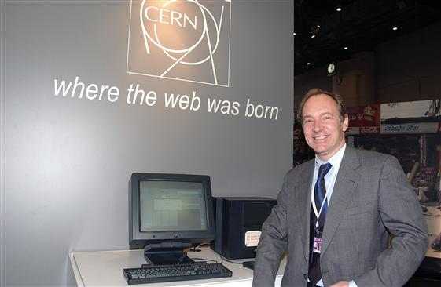
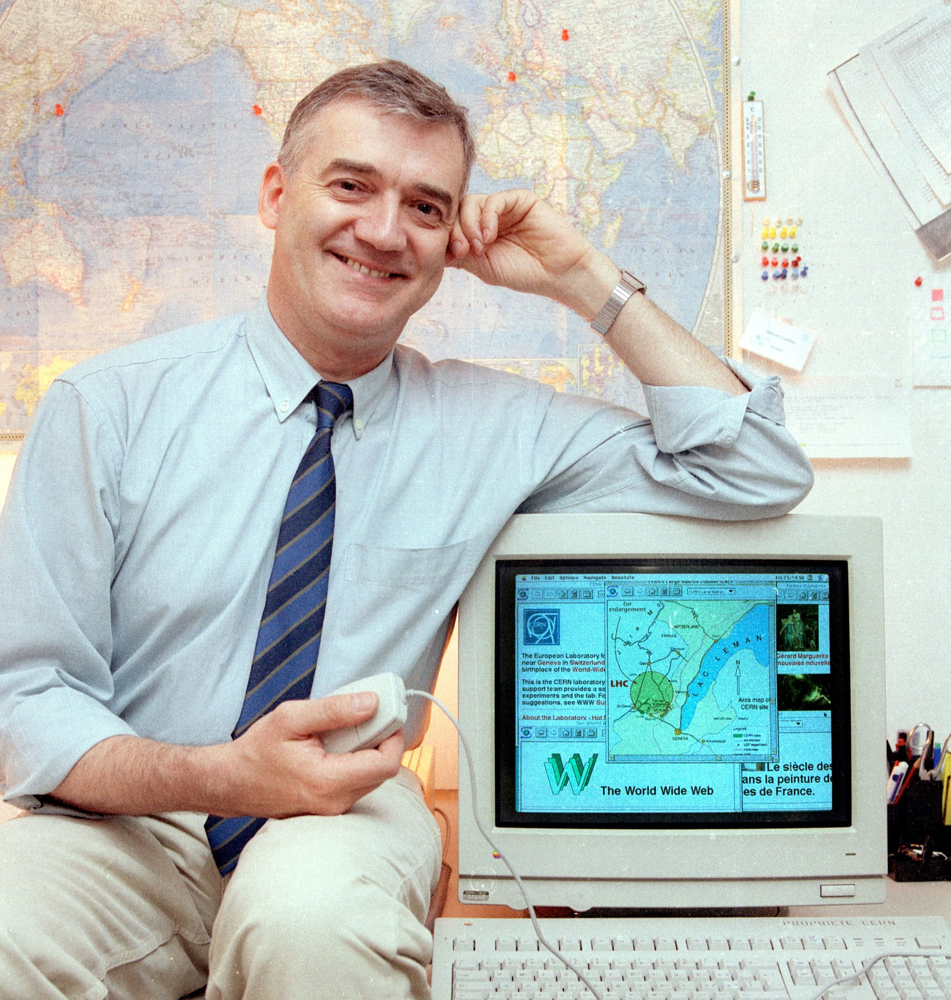

LOS ORIGENES DEL WORLD WIDE WEB Y DEL HTML
WWW & HTML
La World Wide Web (Red Informática Mundial) es uno de los sistemas
informáticos más utilizados en el mundo, ya que permite la conexión y distribución de documentos
en formato hipertexto o hipermedia por medio de hiperenlaces a través de internet.
Fue desarrollada en marzo de 1989 por el inglés Tim Berners-Lee y su colega Robert Cailliau
mientras trabajaban en los laboratorios del CERN (Centro Europeo para la Investigación Nuclear)
ubicado en Ginebra, Suiza.

Tim Berners-Lee durante el WSIS en 2003
Berners-Lee se dedicaba a encontrar una solución efectiva al problema de la
proliferación y la heterogeneidad de la información disponible en la Red. Integrando servicios ya existentes
en Internet (como el Gopher o Enquire), logrando desarrollar la arquitectura básica de lo que actualmente
es la Web.
En 1990, ellos definieron a la web de esta manera:
En 1990, ellos definieron a la web de esta manera:
“La WWW es una forma de ver toda la información disponible en Internet como un continuo,
sin rupturas. Utilizando saltos hipertextuales y búsquedas, El usuario navega a través de un mundo de
información parcialmente creado a mano, parcialmente generado por computadora, almacenados en las bases
de datos existentes y de los sistemas de información".

Robert Cailliau junto al navegador WorldWideWeb
Publicaron el 6 de agosto de 1991 un pequeño resumen del proyecto WWW en el grupo de noticias
alt.hypertext, Siendo esta la fecha del debut del sistema y también el día en el que evolucionó
la comunicación mundial.
Investigado y Programado por: Joel Alfonso Álvarez del Castillo Romo